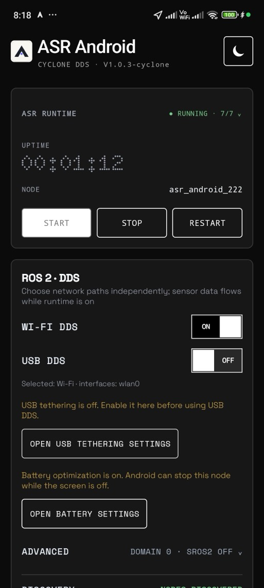
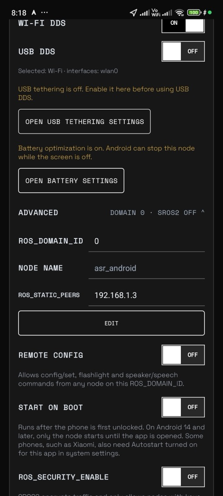

ASR ANDROID · ILLUSTRATED MANUAL
Your phone is now
a robot sensor.
A step-by-step guide for people new to ROS 2. You don't need to know ROS 2 yet, and you'll see live sensor data from your phone by the end of chapter 4.
- 1 What ASR does
- 2 Five words
- 3 What you need
- 4 First connection
- 5 Main screen
- 6 Advanced
- 7 Remote control
- 8 See it visually
- 9 On a robot
- 10 Troubleshooting
What ASR does
Robots need sensors: cameras, motion sensors, GPS. Your phone already has them. ASR Android sends that data to a computer in the format robots use, called ROS 2.
Nothing goes to an ASR server. Data only goes to machines on your own network or cable. ASR Studio is a separate desktop app for checking sensors, and it isn't needed for ROS 2.
Five ROS 2 words you need
Everything else builds on these. Think of ROS 2 as a group chat for robot parts.
asr_android_222./asr_android_222/imu.ROS_DOMAIN_ID can talk. The default is 0.What you need
- An Android phone (64-bit, Android 9 or newer) with ASR Android installed.
- A computer with ROS 2 installed. The ROS 2 install guide covers this.
- Both on the same Wi-Fi, or joined by a USB cable.
Your first connection
- On the phone: open ASR Android and press START. Allow the permissions for the sensors you want.
- Choose how to connect: turn on WI-FI DDS. To use a cable instead, turn on Android's USB tethering and USB DDS.
- On the computer: open a terminal where ROS 2 is set up and ask which nodes exist. Your phone's number will differ.
ros2 node listYou should see something like
/asr_android_222/asr_android_222. If the list is empty, run it once more. If it's still empty, see chapter 10. - See the topics:
ros2 topic list - Watch live data: move the phone and the numbers change. Press
Ctrl+Cto stop.ros2 topic echo /asr_android_222/imu
NODES DISCOVERED once it sees your computer. NO OTHER NODES only means nothing else is running yet, and your phone can still be found.A tour of the main screen

1234567- Runtime status. Shows RUNNING and how many sensors are on. Tap to choose sensors.
- START, STOP, RESTART. Turns the phone’s sensors on and off.
- Node name. This phone’s name in ROS 2. Your topics begin with it.
- WI-FI DDS. Sends ROS 2 data over Wi-Fi.
- USB DDS. Sends ROS 2 data over a USB cable. Needs USB tethering on, and the app shows a button to open that setting.
- Battery warning. On a robot, turn off battery optimization so Android doesn’t stop the app. The warning disappears when it’s off.
- ADVANCED. Tap to open the settings in the next chapter.
Advanced settings
You can skip these at first. Settings stay locked until you press EDIT, so a stray tap can't change anything.

123456- ROS_DOMAIN_ID. Must match your computer. Change it to keep several robots apart.
- NODE NAME and ROS_STATIC_PEERS. Peers fix networks that block discovery. Enter your computer’s IP here (chapter 10).
- EDIT. Unlocks the fields, then choose APPLY or CANCEL. Applying restarts the node.
- REMOTE CONFIG. Lets computers change settings and control the flashlight and speaker. Off by default.
- START ON BOOT. Starts the app after a restart. This varies by phone maker.
- ROS_SECURITY_ENABLE. Encrypts traffic with SROS2. Needs keys, and is off by default. The README explains setup.
Change the camera from your computer
This is handy when the phone is mounted on a robot. First turn on REMOTE CONFIG on the phone.
See the current settings
ros2 topic echo --qos-durability transient_local /asr_android_222/config/stateSwitch camera or size
ros2 topic pub --once /asr_android_222/config/set std_msgs/msg/String "{data: camera.id=1}"
ros2 topic pub --once /asr_android_222/config/set std_msgs/msg/String "{data: camera.resolution=1280x720}"Sizes are 320x240, 640x480 (recommended), 1280x960, 640x360 and 1280x720. A phone may pick its closest size: one tested phone gave 960x544 for 640x360. config/state always shows the real size and live FPS.
See it visually with Foxglove
Foxglove shows camera images and sensor graphs in a window, instead of numbers in a terminal.
- Start the bridge on your computer:
ros2 launch foxglove_bridge foxglove_bridge_launch.xml - In Foxglove, choose Open connection → Foxglove WebSocket and enter
ws://localhost:8765. - Pick a topic such as
camera/image/compressedin an Image panel.
Mounting on a robot
- The node keeps publishing with the screen locked. Both test phones streamed while locked.
- Turn off battery optimization for the app.
- USB is usually steadier than Wi-Fi for the camera.
- Fix where the phone sits in your robot's frames. The phone publishes
/tf_staticwith<node>/base_linkas its parent frame, so add a transform from your robot to it. - The camera's lens values are what the phone reports. For accurate measurement, calibrate with a checkerboard.
Troubleshooting
| What you see | Likely cause | What to do |
|---|---|---|
ros2 node list is empty | A different domain, or runtime or DDS is off | Press START, turn on a DDS switch, and match ROS_DOMAIN_ID on both sides. |
| Ping works, but no node appears over Wi-Fi | A firewall on the computer, or a router that blocks multicast | On the phone, set ROS_STATIC_PEERS to your computer's IP. On the computer, run export ROS_STATIC_PEERS=<phone IP>. Also check that your firewall allows ROS 2. |
| Node appears, but a topic shows no data | That sensor is off or the phone lacks it | Tap the runtime status and check the sensor. Some phones lack some sensors. |
rejected: turn on REMOTE CONFIG | Remote control is off | Turn on REMOTE CONFIG on the phone. |
| Camera is slow or choppy | Weak Wi-Fi | Use USB or a smaller size. Late frames are dropped so you always get a recent one. |
| Timestamps look wrong | Phone and computer clocks differ | Set both to automatic time. One tested phone's clock was 690 ms behind. |
| Can't see the phone with SROS2 on | The computer has no keys, or its RMW lacks security | See the SROS2 section of the README. |
Ready for more detail? See the connection guide.